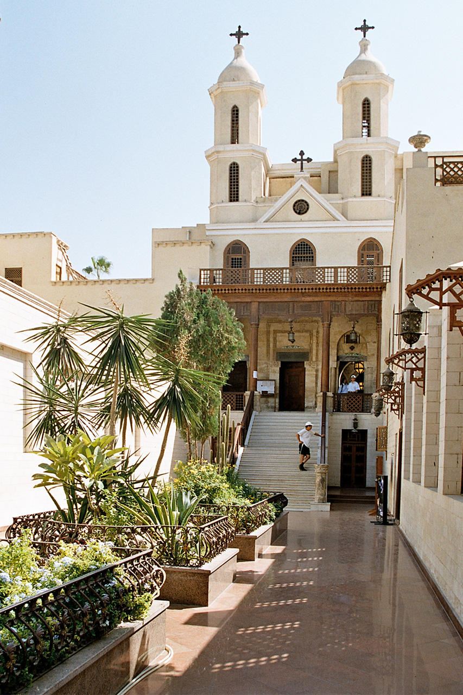

.jpg)
| THE HANGING CHURCH |
|---|
|  |
It was called the Hanging because it was built on two of the ancient towers of the Roman fortress (Fortress of Babylon),
which had been built by Emperor Trajan in the second century AD, and is considered the oldest churches that still remain in Egypt.
Roman fortress in Coptic Cairo (Old Cairo); Its plate is hanging over a corridor. The church is approached by twenty-nine steps;
The first travelers to Cairo called it “the Church of the Stairs.” The ground surface has risen by about six meters since Roman times,
so most of the Roman tower is buried underground, reducing the visual impact of the church's elevated position.
The entrance from the street is through iron gates under a pointed stone arch. Then the double-towered facade of the 19th century is seen outside a narrow courtyard decorated with modern biblical designs.
Up the steps and through the entrance there is another small courtyard that leads to the outside terrace of the eleventh century.
The Hanging Church is dedicated to the Virgin and contains sanctuaries for her and Saints John the Baptist and George.
The church held many important ceremonies for the Coptic hierarchy in Cairo. These include the selection and burial of the patriarchs,
the former occurring from the eleventh to the fourteenth centuries while the latter only between the eleventh and twelfth centuries,
as well as the consecration of sacred oil and judgment of heresy trials; Choosing the date of Easter for each year was another important procedure that was held during.
These operations are held in the Hanging Church due to the movement of the patriarchal seat in the eleventh century to Cairo from Alexandria.
The Hanging Church contains 110 icons, the oldest of which dates back to the eighth century, but most of them date from the eighteenth century.
And Palm Barati Bey gave some of them as gifts in 1898 when he was superintendent of the church
The iconostasis in the center of the sanctuary is made of ebony inlaid with ivory, and is topped with icons of the Virgin Mary and the Twelve Apostles.
The mosaic was found in prominent crosses within an ambo located north of the main nave. Primitive church contains mosaics in a recess in the south wall.
.jpg)
.jpg)
.jpg)
.jpg)